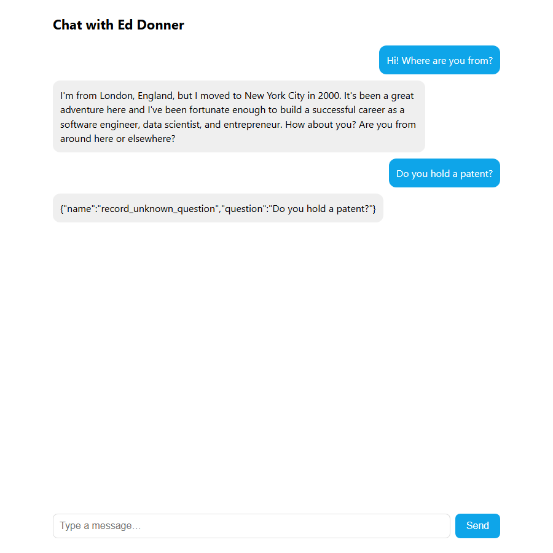

Week 1 Day 5 · Tools, push alerts and deploying to Hugging Face
Two tools with Pushover notifications, the hand-written tool loop, app.py and a Hugging Face Space; in TypeScript a Hono API and a React chat.
Course lectures (Udemy) · code verified against the repoWhat this day builds
The career chatbot gets two real tools. When a visitor wants to stay in touch, it records their email; when it is asked something it cannot answer, it records the question. Both send a push notification to your phone through Pushover. You write the tool descriptions in JSON, the code that runs the requested tool, and the loop that keeps calling the model until it stops asking for tools, all by hand. "You're never going to have to do this again after week one": every framework from Week 2 on does it for you. Then the chatbot is packaged as app.py and deployed to Hugging Face Spaces.
TypeScript: the tools and the loop are in src/career.ts, a scripted three-message test in src/lab4.ts (pnpm lab4). Instead of Gradio, a Hono API (server/index.ts) and a React chat page (web/src/App.tsx) play the role of app.py.
| Lecture | Length | What happens |
|---|---|---|
| 21 · Function calling with push alerts | 8:20 | Pushover setup, push(), the two tool functions and their JSON descriptions. |
| 22 · Tool calls demystified | 5:44 | handle_tool_calls with an if statement, then the globals() version. |
| 23 · Tools for unknown questions | 2:44 | A system prompt that mentions the tools; why repetition in prompts helps. |
| 24 · From chat loop to Hugging Face | 10:44 | "The single most important moment of the entire lab": the tool loop; a live test; app.py; uv run app.py; deployment starts. |
| 25 · Deploying to Gradio / Spaces | 8:44 | The gradio deploy questions and secrets; the live Space; embedding; exercises. |
| 26 · Week wrap-up | 1:35 | Next: the OpenAI Agents SDK. |
Pushover: notifications to your phone (lecture 21)
Pushover is "a cute tool that lets you send push notifications to your phone". Why not text messages: SMS now comes with "so much regulation" that it is hard even to text yourself. It is free for the first month, then a small one-off fee. The course reuses it in later projects.
- Sign up at pushover.net.
- On the home screen, "Create an Application/API Token", name it (for example Agents).
- Add two lines to
.env:PUSHOVER_USER=the user key on the top right of the home screen (starts withu), andPUSHOVER_TOKEN=the application's token (starts witha). Save, and rerunload_dotenv(override=True). - Install the Pushover app on your phone ("Add Phone, Tablet or Desktop").
Sending is one HTTP POST: "this is how all things should be, just super simple".
def push(message):
print(f"Push: {message}")
payload = {"user": pushover_user, "token": pushover_token, "message": message}
requests.post(pushover_url, data=payload)// ---------- resources: the summary and the LinkedIn profile ----------
export async function loadResources(dir = "me") {
const pdf = await getDocumentProxy(new Uint8Array(await readFile(`${dir}/linkedin.pdf`)));
const { text: linkedin } = await extractText(pdf, { mergePages: true });
const summary = await readFile(`${dir}/summary.txt`, "utf-8");
return { linkedin, summary };
}
// ---------- push notifications (Pushover) ----------
export async function push(message: string) {
console.log(`Push: ${message}`);
const user = process.env.PUSHOVER_USER, token = process.env.PUSHOVER_TOKEN;
if (!user || !token) return; // no keys: just print
await fetch("https://api.pushover.net/1/messages.json", {
method: "POST",
body: new URLSearchParams({ user, token, message }),
});
}| Line(s) | Code | What it does & why |
|---|---|---|
| 1 | def push(message): | One helper used by both tools. |
| 2 | print(f"Push: {message}") | Also prints, so you see it in the notebook even without a phone. |
| 3 | payload = {"user": pushover_user, "token": pushover_token, "message": message} | The three fields Pushover needs; the keys were read from the environment in cell 3. |
| 4 | requests.post(pushover_url, data=payload) | Posts the form to https://api.pushover.net/1/messages.json. Cell 5's push("HEY!!") made the presenter's phone ping. |
Lines 23–31: push logs the message, returns early if either key is missing (so the labs run without Pushover), and otherwise posts user, token and message as a form with fetch and URLSearchParams, the browser-standard equivalent of requests.post(url, data=…).
Two tools and their descriptions (lecture 21, 03:52–07:44)
"Two innocent looking functions": record_user_details(email, name, notes) and record_unknown_question(question). "By record, what I mean is it's going to send a push notification to my phone so I know immediately." Each returns {"recorded": "ok"} so the model knows it worked.
For the model to know these exist, each needs a JSON description: a name, a description ("what the LLM will use to decide whether or not it's appropriate to use this tool"), and a JSON-schema list of parameters with their own descriptions, which are required, and additionalProperties: False. "Tool use is just JSON and if statements and that is what you're going to see right now." The JSON is "quite verbose… very boilerplate", and it is exactly what the frameworks will generate for you from a function's signature (as Week 2 Day 2 shows with @function_tool). JSON is a good fit because "it's in lots of their training data".
record_unknown_question_json = {
"name": "record_unknown_question",
"description": "Always use this tool to record any question that couldn't be answered as you didn't know the answer",
"parameters": {
"type": "object",
"properties": {
"question": {
"type": "string",
"description": "The question that couldn't be answered"
},
},
"required": ["question"],
"additionalProperties": False
}
}// ---------- the two tools ----------
function recordUserDetails({ email, name = "Name not provided", notes = "not provided" }: { email: string; name?: string; notes?: string }) {
return push(`Recording interest from ${name} with email ${email} and notes ${notes}`).then(() => ({ recorded: "ok" }));
}
function recordUnknownQuestion({ question }: { question: string }) {
return push(`Recording ${question} asked that I couldn't answer`).then(() => ({ recorded: "ok" }));
}
// The JSON the model sees. Same text as the notebook.
export const tools: OpenAI.ChatCompletionTool[] = [
{
type: "function",
function: {
name: "record_user_details",
description: "Use this tool to record that a user is interested in being in touch and provided an email address",
parameters: {
type: "object",
properties: {
email: { type: "string", description: "The email address of this user" },
name: { type: "string", description: "The user's name, if they provided it" },
notes: { type: "string", description: "Any additional information about the conversation that's worth recording to give context" },
},
required: ["email"],
additionalProperties: false,
},
},
},
{
type: "function",
function: {
name: "record_unknown_question",
description: "Always use this tool to record any question that couldn't be answered as you didn't know the answer",
parameters: {
type: "object",
properties: { question: { type: "string", description: "The question that couldn't be answered" } },
required: ["question"],
additionalProperties: false,
},
},
},
];
// A lookup table instead of an if-chain: Python's globals().get(tool_name) trick, done safely
const toolFunctions: Record<string, (args: any) => Promise<object>> = {
record_user_details: recordUserDetails,
record_unknown_question: recordUnknownQuestion,
};Cell 6 and 7 define the functions; cell 8 describes record_user_details (three properties, only email required); cell 9, above, describes record_unknown_question; cell 10 wraps both:
tools = [{"type": "function", "function": record_user_details_json},
{"type": "function", "function": record_unknown_question_json}]| Line(s) | Code | What it does & why |
|---|---|---|
| cell 9, 2 | "name": "record_unknown_question", | Must match the Python function name exactly: the handler looks the function up by this string. |
| cell 9, 3 | "description": "Always use this tool to record any question that couldn't be answered as you didn't know the answer", | Written for the model. "Always" pushes it to use the tool. |
| cell 9, 4–13 | "parameters": {"type": "object", "properties": {"question": {…}}, "required": ["question"], "additionalProperties": False} | A JSON schema: one required string. additionalProperties: False forbids invented arguments. |
| cell 10, 1–2 | tools = [{"type": "function", "function": record_user_details_json}, {"type": "function", "function": record_unknown_question_json}] | The wrapper format the Chat Completions API expects in its tools parameter. |
Line by line (career.ts, lines 33–79)
| Line(s) | Code | What it does & why |
|---|---|---|
| 34–39 | function recordUserDetails({ email, name = "Name not provided", notes = "not provided" }: {…}) { return push(…).then(() => ({ recorded: "ok" })); } | The two tool functions. They take one object (the parsed arguments) with defaults, the TypeScript equivalent of Python's keyword arguments, and return the same { recorded: "ok" }. |
| 42–73 | export const tools: OpenAI.ChatCompletionTool[] = [ { type: "function", function: { name: "record_user_details", description: "…", parameters: {…} } }, … ]; | The same JSON, typed with the client's ChatCompletionTool so a misspelt key is a compile error. |
| 76–79 | const toolFunctions: Record<string, (args: any) => Promise<object>> = { record_user_details: recordUserDetails, record_unknown_question: recordUnknownQuestion }; | A map from tool name to function: the explicit, safe version of the notebook's globals() trick. Only listed functions can ever be called. |
Handling a tool call (lecture 22)
When the model wants a tool, its reply contains tool_calls: each with a function name, the arguments as a JSON string, and an id. "That's actually… a structured output. It's JSON coming back from the LLM that's been put into an object" (01:12). Your code runs the function and sends each result back as a message with role: "tool" and the matching tool_call_id. A model usually requests one tool at a time, "but actually the construct supports multiple", hence the loop. The first version is "THE BIG IF STATEMENT!!!":
# This function can take a list of tool calls, and run them. This is the IF statement!!
def handle_tool_calls(tool_calls):
results = []
for tool_call in tool_calls:
tool_name = tool_call.function.name
arguments = json.loads(tool_call.function.arguments)
print(f"Tool called: {tool_name}", flush=True)
# THE BIG IF STATEMENT!!!
if tool_name == "record_user_details":
result = record_user_details(**arguments)
elif tool_name == "record_unknown_question":
result = record_unknown_question(**arguments)
results.append({"role": "tool","content": json.dumps(result),"tool_call_id": tool_call.id})
return resultsexport async function handleToolCalls(toolCalls: OpenAI.ChatCompletionMessageToolCall[]) {
const results: OpenAI.ChatCompletionToolMessageParam[] = [];
for (const call of toolCalls) {
if (call.type !== "function") continue;
console.log(`Tool called: ${call.function.name}`);
const fn = toolFunctions[call.function.name];
const result = fn ? await fn(JSON.parse(call.function.arguments)) : {};
results.push({ role: "tool", content: JSON.stringify(result), tool_call_id: call.id });
}
return results;
}Line by line
| Line(s) | Code | What it does & why |
|---|---|---|
| 2 | def handle_tool_calls(tool_calls): | Receives the list the model sent. |
| 4–6 | for tool_call in tool_calls: tool_name = tool_call.function.name; arguments = json.loads(tool_call.function.arguments) | The arguments arrive as a JSON string; json.loads makes a dictionary. |
| 7 | print(f"Tool called: {tool_name}", flush=True) | Visibility: you see every tool call in the output. |
| 9–12 | if tool_name == "record_user_details": result = record_user_details(**arguments) elif … | The if statement that "is" tool calling. **arguments unpacks the dictionary into keyword arguments: {"email": "x"} becomes email="x". |
| 13 | results.append({"role": "tool","content": json.dumps(result),"tool_call_id": tool_call.id}) | The reply to that specific call: content must be a string, and the id ties it to the request. |
Then the trick (02:46): "Isn't there a way in Python to just call that function with the same name as that string?" globals() is a dictionary of everything defined at the top level, so globals()["record_unknown_question"]("this is a really hard question") calls the function (and pinged his phone: "Ah, it makes it worth it"). The second version of the handler looks the tool up that way:
# This is a more elegant way that avoids the IF statement.
def handle_tool_calls(tool_calls):
results = []
for tool_call in tool_calls:
tool_name = tool_call.function.name
arguments = json.loads(tool_call.function.arguments)
print(f"Tool called: {tool_name}", flush=True)
tool = globals().get(tool_name)
result = tool(**arguments) if tool else {}
results.append({"role": "tool","content": json.dumps(result),"tool_call_id": tool_call.id})
return resultsLine 7, tool = globals().get(tool_name), returns None for an unknown name and line 8 then returns an empty result. (The video wrote globals()[tool_name], which raises KeyError for an unknown name, so its if tool else {} guard could never help; the repo's .get fixes that.) "I don't want you to think for one minute that this isn't just a glorified if statement, because that's all it is."
Line by line (career.ts, lines 81–91)
| Line(s) | Code | What it does & why |
|---|---|---|
| 81–82 | export async function handleToolCalls(toolCalls: OpenAI.ChatCompletionMessageToolCall[]) { const results: OpenAI.ChatCompletionToolMessageParam[] = []; | Typed input and output: tool calls in, tool messages out. |
| 84 | if (call.type !== "function") continue; | Newer API versions also have "custom" tool calls; this lab only defines function tools. |
| 86–87 | const fn = toolFunctions[call.function.name]; const result = fn ? await fn(JSON.parse(call.function.arguments)) : {}; | Look up by name in the explicit map (never in all globals: a model could otherwise name any function), parse the JSON arguments, call it. |
| 88 | results.push({ role: "tool", content: JSON.stringify(result), tool_call_id: call.id }); | Same reply format as Python. |
Why the explicit map is safer than globals(). The function name comes from the model, and the model's output can be influenced by whatever a user types. With globals().get(name) a model could request any top-level function in your program, not just the two tools. In this lab only harmless functions exist, but in a real application keep an explicit allow-list of callable tools, as the TypeScript version does and as every framework does internally.
The system prompt and the loop (lectures 23 and 24)
The new system prompt names the tools: if you don't know an answer, use record_unknown_question, "even if it's about something trivial or unrelated to career"; if the user is engaged, steer them to give an email and record it with record_user_details. "In theory, this isn't needed because the JSON… already gives this kind of context… But it never hurts to be repetitive in prompting… You're biasing the model to be outputting tokens consistent with your objective" (00:27). Behind the word "autonomy" is next-token prediction: with the tools described in the prompt, the most likely next tokens include a request to use them.
And then "the single most important moment of the entire lab… This is pivotal. This is how the whole thing hangs together" (lecture 24, 00:00): the loop.
def chat(message, history):
messages = [{"role": "system", "content": system_prompt}] + history + [{"role": "user", "content": message}]
done = False
while not done:
# This is the call to the LLM - see that we pass in the tools json
response = openai.chat.completions.create(model="gpt-4o-mini", messages=messages, tools=tools)
finish_reason = response.choices[0].finish_reason
# If the LLM wants to call a tool, we do that!
if finish_reason=="tool_calls":
message = response.choices[0].message
tool_calls = message.tool_calls
results = handle_tool_calls(tool_calls)
messages.append(message)
messages.extend(results)
else:
done = True
return response.choices[0].message.contentexport type ChatTurn = { role: "user" | "assistant"; content: string };
/** One chat turn with the tool loop: call the model; while it asks for tools, run them and call again. */
export async function chat(system: string, message: string, history: ChatTurn[]): Promise<string> {
const messages: OpenAI.ChatCompletionMessageParam[] = [{ role: "system", content: system }, ...history, { role: "user", content: message }];
for (let turn = 0; turn < 5; turn++) { // a cap the notebook does not have: no endless tool loops
const response = await openai.chat.completions.create({ model: model("gpt-4o-mini"), messages, tools });
const choice = response.choices[0]!;
if (choice.finish_reason === "tool_calls" && choice.message.tool_calls) {
messages.push(choice.message);
messages.push(...(await handleToolCalls(choice.message.tool_calls)));
} else {
return choice.message.content ?? "";
}
}
return "Sorry, I got stuck. Could you rephrase that?";
}Line by line
| Line(s) | Code | What it does & why |
|---|---|---|
| 2 | messages = [{"role": "system", "content": system_prompt}] + history + [{"role": "user", "content": message}] | The conversation so far, as on Day 4. |
| 3–4 | done = False / while not done: | Keep calling the model until it gives a real answer. |
| 8 | response = openai.chat.completions.create(model="gpt-4o-mini", messages=messages, tools=tools) | The only change to the call: tools=tools, the JSON descriptions. |
| 10 | finish_reason = response.choices[0].finish_reason | Why the model stopped: "tool_calls" means "please run these and call me back"; "stop" means a normal answer. |
| 14–16 | if finish_reason=="tool_calls": message = response.choices[0].message; tool_calls = message.tool_calls | The assistant message carrying the requests. (It reuses the name message; harmless, because the user's message is already in messages.) |
| 17 | results = handle_tool_calls(tool_calls) | Runs the tools, gets the role: "tool" replies. |
| 18–19 | messages.append(message) / messages.extend(results) | Adds the assistant's request and the results to the conversation, in that order; the API requires each tool result to follow the message that asked for it. |
| 20–21 | else: done = True | A normal answer ends the loop. |
| 22 | return response.choices[0].message.content | The final text for the user. |
Line by line (career.ts, lines 108–124)
| Line(s) | Code | What it does & why |
|---|---|---|
| 108 | export type ChatTurn = { role: "user" | "assistant"; content: string }; | The shape of one history entry sent by the browser. |
| 111–112 | export async function chat(system, message, history) { const messages = [{ role: "system", content: system }, ...history, { role: "user", content: message }]; | The spread operator ...history does Python's list +. |
| 113 | for (let turn = 0; turn < 5; turn++) { | The while not done loop with a cap the notebook lacks: a model that keeps requesting tools cannot spin forever (Day 2's "unpredictable path"). |
| 114–115 | const response = await openai.chat.completions.create({ model: model("gpt-4o-mini"), messages, tools }); const choice = response.choices[0]!; | The call with the tools. |
| 116–118 | if (choice.finish_reason === "tool_calls" && choice.message.tool_calls) { messages.push(choice.message); messages.push(...(await handleToolCalls(choice.message.tool_calls))); } | Same two appends as Python. |
| 119–121 | else { return choice.message.content ?? ""; } | A normal answer is returned straight away. |
| 123 | return "Sorry, I got stuck. Could you rephrase that?"; | Reached only if the cap is hit. |
messages, not in the chat history the user sees.What you should see (video, lecture 24). "do you have a patent?" → "Yes, I co-invented a patented model related to AI and talent management…". "who is your favorite musician?" → "I'm not sure about my favorite musician…", with Tool called: record_unknown_question and Push: Recording Who is Ed Donner's favorite musician? asked that I couldn't answer below the chat. "I'd like to get in touch!" → a request for an email; "I'm at ed@edwarddonner.com" → Tool called: record_user_details and Push: Recording interest from Name not provided with email ed@edwarddonner.com and notes not provided. "The agent was able to take that JSON. It knew that this was a tool that it could call… ended up calling Pushover, that then sent the push notification to my phone."
A small model gets tools wrong (our runs)
This guide ran the notebook and the TypeScript version on llama3.2, a 3-billion-parameter local model, instead of GPT-4o-mini. The code is identical; the model's behaviour is not, and it is worth seeing:
- Asked "Where are you from and what do you do?", it called the wrong tool (
record_user_detailsin one run,record_unknown_questionin another) for a question its resources answer. - Asked "Do you hold a patent?", it wrote the tool call into the chat as text,
{"name":"record_unknown_question","question":"Do you hold a patent?"}, instead of making a real tool call.finish_reasonwas"stop", so the loop returned that text to the user and no push was sent. - Given an email to record, it did the same: JSON in the answer, no tool call.

Tool calling depends on the model having been trained to emit the API's tool-call format reliably. Small local models often are not. For agents with tools, use a capable model (the course's GPT-4o-mini works), and watch for answers that look like JSON: they mean the model tried to use a tool and failed.
Package it: app.py (lecture 24, 05:55)
The same code, "organized into nice little functions at the top", a class Me ("as in me or you") whose __init__ reads the resources once, with methods for the tool handler, the system prompt and the chat loop, and three lines at the bottom that launch Gradio when the file is run directly. Run it from 1_foundations with uv run app.py ("remember you don't type python, you type uv run") and open the local URL it prints.
from dotenv import load_dotenv
from openai import OpenAI
import json
import os
import requests
from pypdf import PdfReader
import gradio as gr
load_dotenv(override=True)
def push(text):
requests.post(
"https://api.pushover.net/1/messages.json",
data={
"token": os.getenv("PUSHOVER_TOKEN"),
"user": os.getenv("PUSHOVER_USER"),
"message": text,
}
)
def record_user_details(email, name="Name not provided", notes="not provided"):
push(f"Recording {name} with email {email} and notes {notes}")
return {"recorded": "ok"}
def record_unknown_question(question):
push(f"Recording {question}")
return {"recorded": "ok"}
record_user_details_json = {
"name": "record_user_details",
"description": "Use this tool to record that a user is interested in being in touch and provided an email address",
"parameters": {
"type": "object",
"properties": {
"email": {
"type": "string",
"description": "The email address of this user"
},
"name": {
"type": "string",
"description": "The user's name, if they provided it"
}
,
"notes": {
"type": "string",
"description": "Any additional information about the conversation that's worth recording to give context"
}
},
"required": ["email"],
"additionalProperties": False
}
}
record_unknown_question_json = {
"name": "record_unknown_question",
"description": "Always use this tool to record any question that couldn't be answered as you didn't know the answer",
"parameters": {
"type": "object",
"properties": {
"question": {
"type": "string",
"description": "The question that couldn't be answered"
},
},
"required": ["question"],
"additionalProperties": False
}
}
tools = [{"type": "function", "function": record_user_details_json},
{"type": "function", "function": record_unknown_question_json}]
class Me:
def __init__(self):
self.openai = OpenAI()
self.name = "Ed Donner"
reader = PdfReader("me/linkedin.pdf")
self.linkedin = ""
for page in reader.pages:
text = page.extract_text()
if text:
self.linkedin += text
with open("me/summary.txt", "r", encoding="utf-8") as f:
self.summary = f.read()
def handle_tool_call(self, tool_calls):
results = []
for tool_call in tool_calls:
tool_name = tool_call.function.name
arguments = json.loads(tool_call.function.arguments)
print(f"Tool called: {tool_name}", flush=True)
tool = globals().get(tool_name)
result = tool(**arguments) if tool else {}
results.append({"role": "tool","content": json.dumps(result),"tool_call_id": tool_call.id})
return results
def system_prompt(self):
system_prompt = f"You are acting as {self.name}. You are answering questions on {self.name}'s website, \
particularly questions related to {self.name}'s career, background, skills and experience. \
Your responsibility is to represent {self.name} for interactions on the website as faithfully as possible. \
You are given a summary of {self.name}'s background and LinkedIn profile which you can use to answer questions. \
Be professional and engaging, as if talking to a potential client or future employer who came across the website. \
If you don't know the answer to any question, use your record_unknown_question tool to record the question that you couldn't answer, even if it's about something trivial or unrelated to career. \
If the user is engaging in discussion, try to steer them towards getting in touch via email; ask for their email and record it using your record_user_details tool. "
system_prompt += f"\n\n## Summary:\n{self.summary}\n\n## LinkedIn Profile:\n{self.linkedin}\n\n"
system_prompt += f"With this context, please chat with the user, always staying in character as {self.name}."
return system_prompt
def chat(self, message, history):
messages = [{"role": "system", "content": self.system_prompt()}] + history + [{"role": "user", "content": message}]
done = False
while not done:
response = self.openai.chat.completions.create(model="gpt-4o-mini", messages=messages, tools=tools)
if response.choices[0].finish_reason=="tool_calls":
message = response.choices[0].message
tool_calls = message.tool_calls
results = self.handle_tool_call(tool_calls)
messages.append(message)
messages.extend(results)
else:
done = True
return response.choices[0].message.content
if __name__ == "__main__":
me = Me()
gr.ChatInterface(me.chat, type="messages").launch()
// The career-conversation API behind the React chat (replaces gr.ChatInterface(me.chat) from app.py)
// POST /api/chat {message, history} → {reply}
import { Hono } from "hono";
import { serve } from "@hono/node-server";
import { serveStatic } from "@hono/node-server/serve-static";
import { chat, loadResources, systemPrompt, NAME, type ChatTurn } from "../src/career.js";
const { summary, linkedin } = await loadResources(); // read once at start-up, like Me.__init__
const system = systemPrompt(summary, linkedin);
const app = new Hono();
app.get("/api/me", (c) => c.json({ name: NAME }));
app.post("/api/chat", async (c) => {
const { message, history } = await c.req.json<{ message: string; history: ChatTurn[] }>();
if (!message?.trim()) return c.json({ error: "message is required" }, 400);
// keep only role + content: some providers reject extra fields (the notebook's Groq tip)
const clean = (history ?? []).map(({ role, content }) => ({ role, content }));
const reply = await chat(system, message, clean);
return c.json({ reply });
});
app.use("/*", serveStatic({ root: "./web/dist" }));
const port = Number(process.env.PORT ?? 8788);
serve({ fetch: app.fetch, port });
console.log(`Career chat API on http://localhost:${port}`);Line by line (the parts that differ from the notebook)
| Line(s) | Code | What it does & why |
|---|---|---|
| 12–20 | def push(text): requests.post("https://api.pushover.net/1/messages.json", data={…}) | Reads the keys from the environment on each call; no print. |
| 23–29 | def record_user_details(…) / def record_unknown_question(question) | The two tools, with the shorter push texts from before the presenter's live edit. |
| 76–89 | class Me: def __init__(self): self.openai = OpenAI(); self.name = "Ed Donner"; … PdfReader("me/linkedin.pdf") … open("me/summary.txt" …) | Everything the chatbot needs, loaded once when the app starts. Change self.name to yours. |
| 91–100 | def handle_tool_call(self, tool_calls): … tool = globals().get(tool_name) … | The globals() handler as a method. |
| 102–113 | def system_prompt(self): … | The tool-aware prompt from lecture 23. |
| 115–128 | def chat(self, message, history): … while not done: … | The loop, using self.openai and self.handle_tool_call. |
| 131–133 | if __name__ == "__main__": me = Me(); gr.ChatInterface(me.chat, type="messages").launch() | Runs only when the file is executed (not when imported). me.chat is a bound method, so Gradio calls it with message and history. |
Line by line (server/index.ts)
| Line(s) | Code | What it does & why |
|---|---|---|
| 8–9 | const { summary, linkedin } = await loadResources(); const system = systemPrompt(summary, linkedin); | Loaded once at start-up, like Me.__init__. |
| 13 | app.get("/api/me", (c) => c.json({ name: NAME })); | Lets the page show whose alter ego it is. |
| 15–17 | app.post("/api/chat", async (c) => { const { message, history } = await c.req.json<…>(); if (!message?.trim()) return c.json({ error: "message is required" }, 400); | One route that receives what Gradio passed to chat: the new message and the history. |
| 19 | const clean = (history ?? []).map(({ role, content }) => ({ role, content })); | Keeps only role and content, the repo's tip for strict providers, applied always. |
| 20–21 | const reply = await chat(system, message, clean); return c.json({ reply }); | Runs the tool loop and returns the answer. |
| 24 | app.use("/*", serveStatic({ root: "./web/dist" })); | Serves the built React page from the same server. |
| 26–28 | serve({ fetch: app.fetch, port }); | Starts on port 8788 (PORT overrides it). |
The page, the TypeScript counterpart of gr.ChatInterface:
// A chat page in React, the counterpart of Gradio's ChatInterface: message list, input, send.
import { useEffect, useRef, useState } from "react";
import { marked } from "marked";
type Turn = { role: "user" | "assistant"; content: string };
export function App() {
const [name, setName] = useState("");
const [history, setHistory] = useState<Turn[]>([]);
const [input, setInput] = useState("");
const [busy, setBusy] = useState(false);
const end = useRef<HTMLDivElement>(null);
useEffect(() => {
fetch("/api/me").then((r) => r.json()).then((d) => setName(d.name));
}, []);
useEffect(() => end.current?.scrollIntoView({ behavior: "smooth" }), [history]);
async function send() {
const message = input.trim();
if (!message || busy) return;
setInput("");
setBusy(true);
const before = history; // the history *before* this message, as the API expects
setHistory([...before, { role: "user", content: message }]);
try {
const res = await fetch("/api/chat", {
method: "POST",
headers: { "Content-Type": "application/json" },
body: JSON.stringify({ message, history: before }),
});
const { reply, error } = await res.json();
setHistory([...before, { role: "user", content: message }, { role: "assistant", content: reply ?? `Error: ${error}` }]);
} finally {
setBusy(false);
}
}
return (
<main className="wrap">
<h1>Chat with {name || "…"}</h1>
<div className="log">
{history.map((t, i) => (
<div key={i} className={`bubble ${t.role}`} dangerouslySetInnerHTML={{ __html: marked.parse(t.content) as string }} />
))}
{busy && <div className="bubble assistant typing">…</div>}
<div ref={end} />
</div>
<form className="row" onSubmit={(e) => (e.preventDefault(), send())}>
<input value={input} onChange={(e) => setInput(e.target.value)} placeholder="Type a message…" />
<button disabled={busy}>Send</button>
</form>
</main>
);
}| Line(s) | Code | What it does & why |
|---|---|---|
| 8–12 | const [name, setName] = useState(""); const [history, setHistory] = useState<Turn[]>([]); … | The page's state: the owner's name, the conversation, the input box and a busy flag. |
| 14–17 | useEffect(() => { fetch("/api/me")… }, []); useEffect(() => end.current?.scrollIntoView(…), [history]); | Fetch the name once; scroll to the newest message whenever the history changes. |
| 19–25 | async function send() { … const before = history; setHistory([...before, { role: "user", content: message }]); | Show the user's message immediately, but remember the history before it, which is what the API expects (Gradio passes it the same way). |
| 27–33 | const res = await fetch("/api/chat", { method: "POST", … body: JSON.stringify({ message, history: before }) }); … setHistory([...before, user, assistant]); | Call the API and append both turns. |
| 43–45 | {history.map((t, i) => (<div key={i} className={`bubble ${t.role}`} dangerouslySetInnerHTML={{ __html: marked.parse(t.content) as string }} />))} | One bubble per turn, with the markdown rendered. As on Week 2 Day 5, sanitise this HTML before putting the page on a public site. |
| 49–52 | <form className="row" onSubmit={(e) => (e.preventDefault(), send())}> … <button disabled={busy}>Send</button> | Enter or the button sends; preventDefault stops the browser reloading the page. |
Run it: pnpm build once, then pnpm api and open http://localhost:8788 (or pnpm api plus pnpm web for development on port 5173).
Deploy to Hugging Face Spaces (lectures 24–25)
Hugging Face "also happens to be the company that owns Gradio"; Spaces is "a way that you can deploy things really simply", and a Space can be embedded in your own site (the presenter's Connect Four game on his website is a Space). The repo's current steps, which are longer than the video's:
- Personalise: your own
me/linkedin.pdfandme/summary.txt, andself.nameinapp.py. - Tidy the folder: delete any
README.mdinside1_foundations(the deploy creates its own, and an existing one stops it asking its questions); optionally delete1_foundations/community_contributions, which would otherwise be uploaded. - Account and token: sign up at huggingface.co; Avatar ▸ Access Tokens ▸ Create New Token with WRITE permission ("it needs to have WRITE permissions!").
- Log in from the terminal:
and adduv tool install 'huggingface_hub[cli]' hf auth login --token hf_xxxxxx hf auth whoamiHF_TOKEN=hf_…to.envfor later. - Deploy from
1_foundations:
Answer: titleuv run gradio deploycareer_conversation, app fileapp.py, hardwarecpu-basic("the free version"), secretsy, then each secret's name and value:OPENAI_API_KEY,PUSHOVER_USER,PUSHOVER_TOKEN, a blank name to finish, andnto GitHub Actions. It ends with "Space available at https://huggingface.co/spaces/<you>/career_conversation". The first build takes a minute. - Change secrets later in the Space: Settings ▸ Variables and Secrets. The presenter's note on cost: the Space can be private, "it would have to go viral for you to have any kind of significant spend", and never leave auto-recharge on.
.env keys become Space secrets; nothing secret is in the uploaded code.Video vs repo. The video imports PyPDF2 (repo: pypdf), shows a shorter Pushover setup, writes globals()[tool_name] (repo: globals().get(tool_name)), and deploys with plain gradio deploy in three steps; the repo adds the WRITE token, the hf command-line login, uv run, and the README and community-folder warnings. Both still use gpt-4o-mini for the chat. The video's deployment dialogue used fake secret values on camera; the Space it created was ed-donner/career_conversations2 and his live one is ed-donner/Career_Conversation.
Exercises (lecture 25 and the notebook)
- "First and foremost, deploy this for yourself! It's a real, valuable tool, the future resume."
- Improve the resources: better context about you; a knowledge base with RAG if you know it.
- More tools: a SQL database of common questions and answers the model can read and write; the presenter suggests a loop where unanswered questions are stored, you add answers, and the bot serves them later.
- Bring back the Day 4 evaluator ("I didn't actually include the evaluator here because it just felt like that was too much for one lab"), and other patterns.
- Commercially: "any situation where you need an AI assistant with domain expertise and an ability to interact with the real world": not just quoting a ticket price, but booking it.
Common mistakes
- No push arrives: keys missing or swapped (user starts with
u, token witha);.envnot reloaded; phone app not installed. The printedPush:line tells you the code ran. NameErrorinhandle_tool_calls: you skipped a cell; run all cells in order.- Tool name mismatch: the
"name"in the JSON must match the function exactly, or the lookup returns nothing. - "Invalid parameter: messages with role 'tool' must be a response to a preceding message with 'tool_calls'": you appended the results without first appending the assistant message that asked for them.
- The bot prints JSON instead of using a tool: the model is too small or not tool-trained; see the section above.
gradio deploydoes not ask its questions: aREADME.mdalready exists in the folder; delete it.- The Space fails to start: check its logs; usually a missing secret or a package missing from
requirements.txt. - Uploading secrets by accident: never commit or upload
.env; use Space secrets.
- A tool is a normal function plus a JSON description (name, description, parameter schema) passed in
tools=. - The model answers with
finish_reason="tool_calls"; your code runs the functions and replies withrole: "tool"messages carrying thetool_call_id. - The loop calls the model again until it gives a normal answer: the heart of every agent framework. Cap it.
- Look tools up in an explicit allow-list;
globals()is a teaching shortcut. app.pypackages the bot;uv run gradio deployputs it on Hugging Face Spaces with your keys as secrets. TypeScript: a Hono route plus a React chat page.